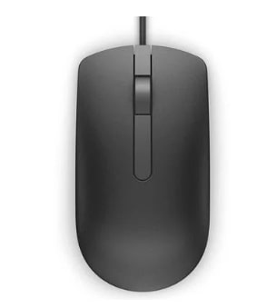
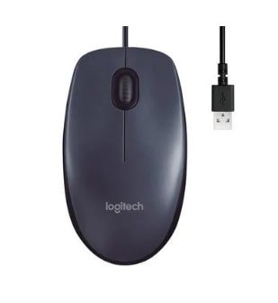
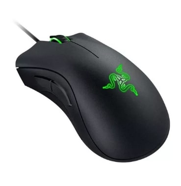

Catálogo de Produtos
Tabela
Foto
Código
Descrição
Qtde em estoque
Valor Unitário

1
Mouse Laser com fio Dell MS116
6
R$ 75,99

2
Mouse com fio Logitech M90
11
R$ 34,90

3
Mouse Razer Gamer
5
R$ 199,00
Descrição
Características do Produto
Especificações Mouse Dell
Resolução do sensor: 1000 dpi
Tipo de sensor: Óptico
Conectividade USB
Avaliação do produto
Gustavo Zamboni
Comprei o mouse da Dell e é bom pra caramba
Giovanna Sousa
Mouse muito bom
Especificações Mouse Logitech
Resolução do sensor: 1000 dpi
Tamanho padrão, design ambidestro
Conectividade USB
Avaliação do produto
Hugo Neneca
Esse mouse é o melhor que eu já tive !
Roberto Carlos
Ótimo mouse para o trabalho
Especificações Mouse Razer
Resolução do sensor: 6400 dpi
Tipo de sensor: Óptico
É sem fio: Não
Avaliação do produto
Gabriel Toledo
Uso para jogar e ele é muito bom
Alexandre
Não gostei tanto, esperava mais